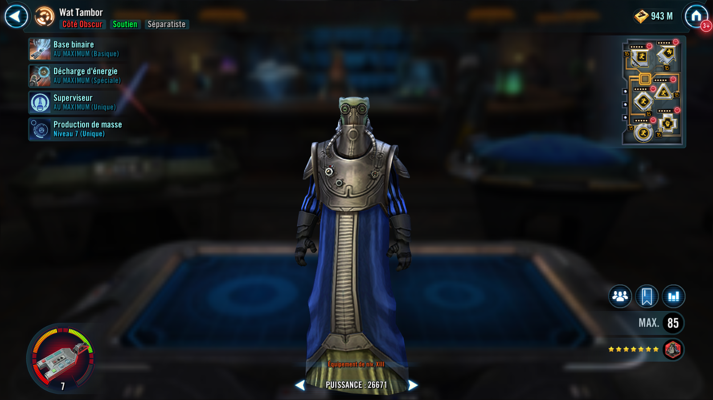
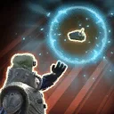
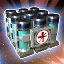

Wat Tambor
Separatist Support who distributes powerful Tech to his allies
Separatist Support who distributes powerful Tech to his allies

During Wat's turn: Dispel debuffs on target ally if any ally has debuffs. Apply Heal Over Time twice on all allies for 2 turns.
Out of turn: Inflict Damage Over Time twice on target enemy for 2 turns and remove 15% Turn Meter. This ability can't be evaded.

Revive a random Separatist or Dark Side Droid ally at 100% Health and grant all allies Protection Over Time (30%) for 2 turns. Trigger the healing of all Heal Over Time buffs on allies and the damage of all Damage Over Time debuffs on enemies.
At the start of battle, other Separatist and Dark Side Droid allies gain Max Protection equal to 30% of Wat's Max Health. All Separatist and Dark Side Droid allies have +30% Critical Avoidance while they have Heal Over Time.
Whenever an ally with Tech uses a Special ability, Wat is called to assist. If there are no other allied combatants at the start of a turn, Wat escapes from battle.
At the start of battle, Wat gains a bonus turn and access to the following Tech in the form of abilities. When Wat uses a piece of Tech, the target other ally gains its effects until defeated or the end of battle.
The cooldown of each piece of Tech is set to max and can't be reduced if all allies have Tech or if it is active on an ally. Tech can't be copied, dispelled, or prevented, and an ally can only have one piece of Tech.
Chiewab Medpac: Recover 5% Health and Protection at the start of every character's turn, and 5% bonus Protection if this character is a Separatist
Baktoid Shield Generator: At the start of turn, recover 30% Protection and dispel own debuffs; Tanks Taunt while they have Protection
BlasTech Weapon Mod: Gain 15% Turn Meter at the start of each enemy's turn; enemies defeated by this character can't be revived

Distribute the Chiewab Medpac to target ally.
Chiewab Medpac: Recover 5% Health and Protection at the start of every character's turn, and 5% bonus Protection if this character is a Separatist
Distribute the Baktoid Shield Generator to target ally.
Baktoid Shield Generator: At the start of turn, recover 30% Protection and dispel own debuffs; Tanks Taunt while they have Protection
Distribute the BlasTech Weapon Mod to target ally.
BlasTech Weapon Mod: Gain 15% Turn Meter at the start of each enemy's turn; enemies defeated by this character can't be revived